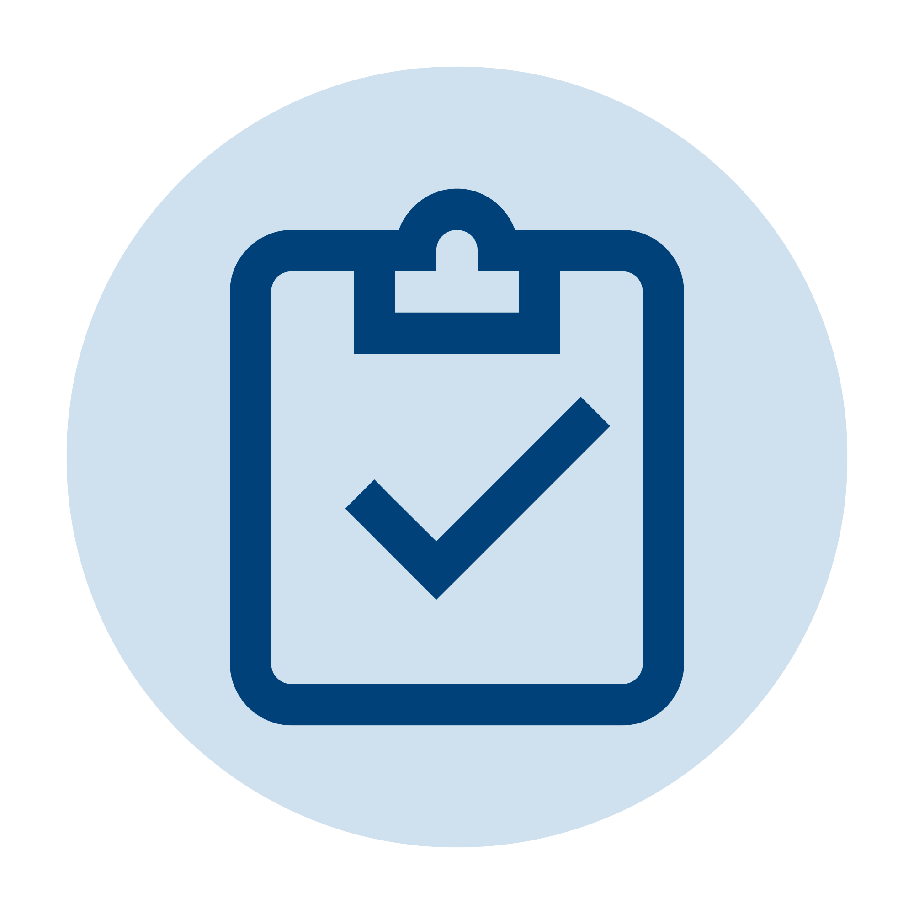

01
Map
Review the course syllabus, define Course Outcomes, and connect activities and assessments to the appropriate COs and Student Outcomes.
A connected process from curriculum planning to continuous improvement.
EduMetrics Workflow
EduMetrics connects the major steps of academic assessment into one traceable workflow. Each stage builds the evidence needed for the next review, measurement, and improvement decision.

AssessTHE EDUMETRICS PROCESS
A connected sequence from approved curriculum information to evidence-based improvement.
Review the course syllabus, define Course Outcomes, and connect activities and assessments to the appropriate COs and Student Outcomes.
Create assessment evidence and enter raw scores for each student. Faculty retain control of their assigned course and section records.
Use mapped assessment results to calculate CO attainment, compare performance with the target, and identify current class weaknesses.
Use below-target outcomes as evidence for CQI analysis, document improvement actions, and monitor the response to those actions.
THE EIGHT-STAGE PROCESS
Select a step to see its purpose, responsible users, and expected output.
Define the course syllabus and align Course Outcomes (COs) with Student Outcomes (SOs).
A LEARNING STORY, NOT JUST A FLOWCHART
Explore the decisions and evidence behind the eight-stage process.
CHAPTER 01 / PLAN
Faculty identify what students should be able to demonstrate, then connect course outcomes to learning experiences.
CHAPTER 02 / MEASURE
Mapped assessments and encoded scores reveal which competencies are being demonstrated, not just the final mark.
CHAPTER 03 / IMPROVE
Attainment reviews guide CQI actions, verification, and reports for the next cycle.
ILLUSTRATIVE CLASSROOM SCENARIO
Imagine a course where SO3 reaches only 58% attainment. The workflow connects that result to a concrete teaching response.
Every stage leaves a clear record that supports academic review and decision-making.
Activities and assessments remain connected to their mapped Course Outcomes.
CO performance can be reviewed against configured targets and flagged when improvement is needed.
Below-target outcomes provide a documented starting point for analysis and improvement planning.
Faculty, Department Heads, Students, and Administrators receive views appropriate to their responsibilities.
KEEP EXPLORING
See the tools and academic workspaces that support each stage of the workflow.